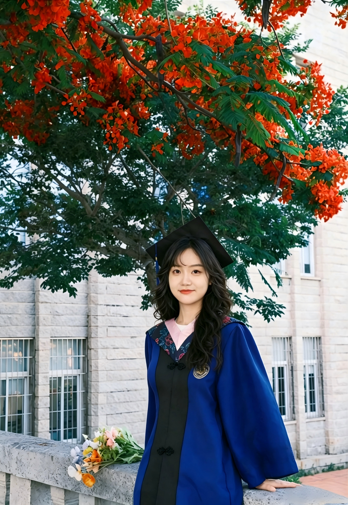

学历信息
厦门大学
法学理论 · 硕士

华南农业大学
法学 · 本科
专业技能
证书/执照
法律职业资格证（A证），驾驶证，广东省海外知识产权人才库成员
语言
英语（CET-6），粤语（母语），普通话
获奖情况
在2022-2025学年连续获得厦门大学学业奖学金；
荣获华南农业大学院级优秀团干表彰；
在2017-2021学年连续获得校二、三等奖学金；
实习情况
东莞市第二人民法院虎门人民法庭
实习生
司法大数据治理
负责35+起民事案件的全流程数字化管理，从立案录入到结案归档，确保案件信息在法院办案系统中的完整性与准确性，深入理解司法审判系统的运行逻辑与数据结构。
文书自动化协助
协助法官处理大量同质化案件（如网络买卖合同纠纷），利用模板化思维优化裁判文书撰写流程，通过整理类案裁判规则，协助提升审判效率。
纠纷类型化分析
对民间借贷与买卖合同纠纷进行类型化梳理，提炼争议焦点与裁判要素，为后续的类案推送与法律检索提供数据支持。
腾讯大粤网
法律编辑实习生
全流程内容产出与排版
负责“越秀区法院”等官方政务新媒体号的选题策划与图文排版。通过对法律条文的通俗化拆解，创作高质量推文，严格把控法律内容的准确性与视觉美感，确保内容风格符合官方品牌调性。
短视频创作与后期剪辑
独立负责法律宣传视频的素材收集、脚本撰写及后期剪辑工作。熟练运用剪映等工具进行视频包装，通过节奏控制和视觉优化提升视频传播力，累计参与制作3部宣传视频。
深度内容策划与脚本撰写
担任腾讯视频节目《律师怎么看》的访谈策划，负责挖掘社会热点并撰写采访大纲及视频脚本。通过精准的逻辑构建和话题引导，确保节目内容的专业性与观众互动率。
大型活动统筹与物料支持
作为“青年法学家会议”常务成员，负责会议期间的各项统筹工作及宣传支持。
虎门司法分局
实习生
诉讼业务
在虎门政务服务大厅前台的法律援助窗口接待20余位当事人，协助法律援助律师办理包括文件翻译、录音证据文稿转换、法律文书撰写、诉讼材料准备、开庭证据准备和案卷整理等基础性法律事务。实习期间累计撰写过包括但不限于律师函、证人出庭申请书、恢复执行申请书、代理意见等法律文书累计10余份。
法律检索
在岗期间累计完成10余件案件的检索，并根据检索情况出具了对劳动争议案件处理及司法实践中投保人告知义务范围等问题的类案检索、法规检索报告。
课题项目经历
福建省法规规章规范性文件“审查与清理”项目
福建省人大横向委托课题项目
规范性文件审查
参与福建省人大485份规范性文件的审查，对文件的合宪性、政治性、合法性、适当性等问题进行审查。审核出因上位法修改而建议修改或清理的地方性法规59份。
信息管理优化
为284份地方性法规附上在数据库上检索的关键词；审查出数据库中尚未更新或显示异常的地方性法规6份。
项目成效
项目研究报告受省人大表扬，并成为省人大向全人大工作汇报的部分内容。
社团经历
创新创业法律服务中心
普法部部长
合同审查
为初创企业提供合同审查服务，包括采购协议、服务框架合同等，通过系统化的风险识别和条款优化，累计审查合同30+份，规避潜在法律风险20余项，确保企业合规运营。
新媒体运营
运营组织的微信公众平台，通过精准的内容策划和用户互动，现已有3000+同学关注，审核编辑推送内容，并策划每周法律事件选题，提升平台影响力和用户粘性。
组织培训
协调中心各部门的工作，先后组织“双创有约”访谈活动、合同审査大赛等学院活动，通过有效宣传和资源整合，活动参与人数累计超过1200人，提升社团影响力和学生参与度。